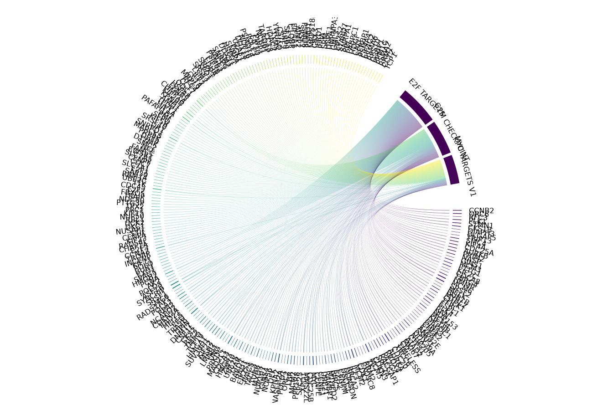

The chordPlot function creates a chord diagram
visualization to display the relationships between genes and their
associated pathways from gene set enrichment analysis (GSEA) results. The
chord plot provides an intuitive way to visualize gene-pathway associations,
where genes and pathways are represented as nodes around a circle, connected
by arcs that represent their relationships.
Arguments
- seDataFgsea
A
SummarizedExperimentobject containing GSEA results and pairwise pathway similarity information, typically extracted using.extractDF(type = "gseaReadable").- showCategory
Numeric or character. The number of top pathways to display, or a vector of specific pathway names to include. Default is
3.- breaklineN
An integer specifying the maximum number of characters per line before inserting a line break in pathway names for better readability. Default is
30.- fontSize
A numeric value between 0 and 1 controlling the font size in the chord plot. Values closer to 1 result in larger text. Default is
0.5.
Value
A named list containing two elements:
chordPlotA chord diagram visualization object showing gene-pathway relationships from the GSEA results. Genes and pathways are represented as nodes around a circle, connected by arcs that represent their associations
tableChordPlotA data.frame containing the chord plot data with columns:
original_name(original pathway IDs),label_name(formatted pathway names with line breaks), andGene(genes associated with each pathway, concatenated with '/' separator)
Details
This function internally calls the helper function .chrod()
(stored in utils-plot.R), which uses the circlize package
to create a publication-quality chord diagram. Pathway names are displayed
on the inner side of the circle, while gene names are positioned along the
outer circle, improving readability and visual balance.
The color palette is automatically generated using
viridisLite::viridis() to ensure a perceptually uniform and
color-blind–friendly representation.
Examples
data("sig2Fun_result")
chordPlot(seDataFgsea = sig2Fun_result)
#>

#> $chordPlot
#>
#> $tableChordPlot
#> # A tibble: 3 × 3
#> # Groups: original_name [3]
#> original_name label_name Gene
#> <chr> <chr> <chr>
#> 1 HALLMARK_E2F_TARGETS E2F TARGETS CCNB2/ORC6/RFC3/PLK1/STMN1/CKS1B/DIAPH…
#> 2 HALLMARK_G2M_CHECKPOINT G2M CHECKPOINT CCNB2/ORC6/EXO1/BUB1/POLQ/KIF11/PLK1/S…
#> 3 HALLMARK_MYC_TARGETS_V1 MYC TARGETS V1 CCNA2/CCT7/RFC4/MRPL9/CCT4/MCM6/SRSF2/…
#>